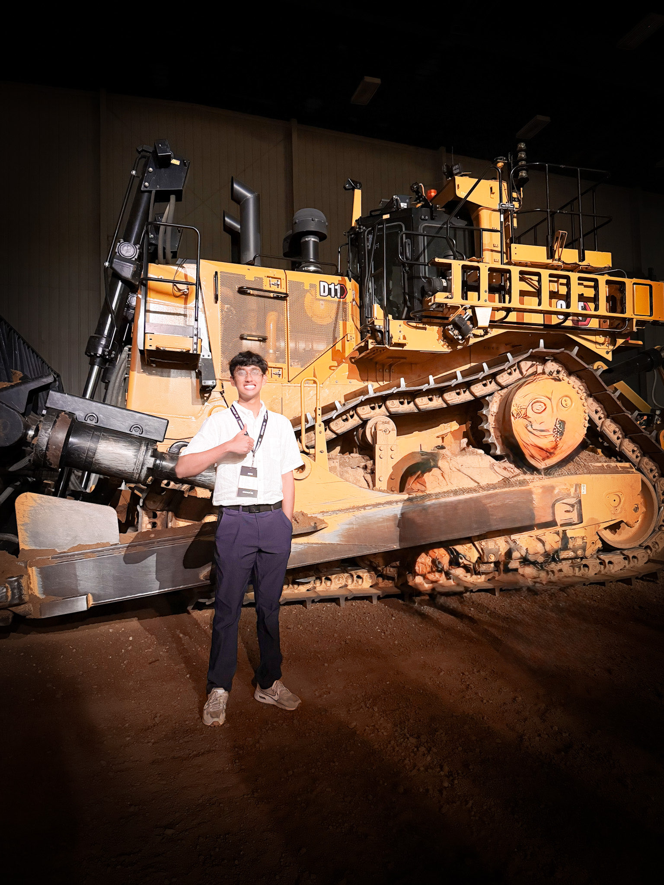

Embedded Controls Co‑Op
Caterpillar Inc., Caterpillar Technology • Aug 2025 – Present
After completing my simulations internship, I transitioned to the locomotion controls team. Here I develop embedded software that powers traction and stability systems on Caterpillar’s heavy machinery.
Highlights
- Improving model‑based controllers in Simulink for traction, braking and position estimation. Tuned gains using Software‑in‑the‑loop (SITL) platforms.
- Generating production C code from Simulink models and integrated it with existing firmware modules.
- In the works.
- Currently in progress.
Skills & Tools
- Model‑Based Design (Simulink, Stateflow)
- Embedded C programming & code generation
- HIL testing & data acquisition
- CAN bus & sensor integration
